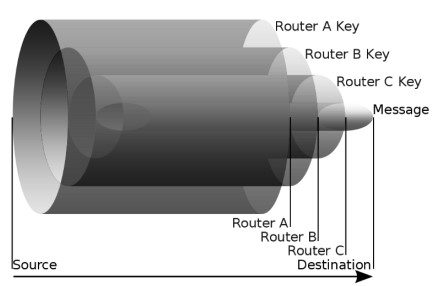
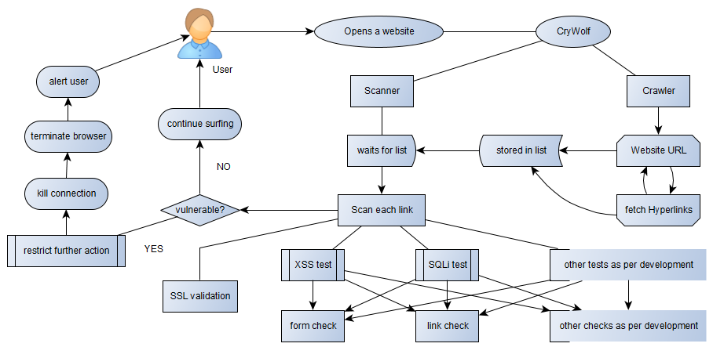
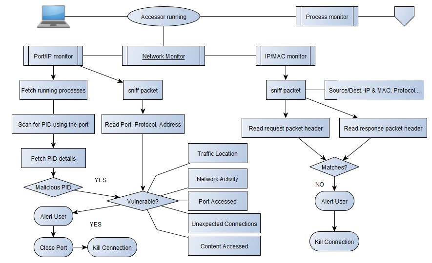
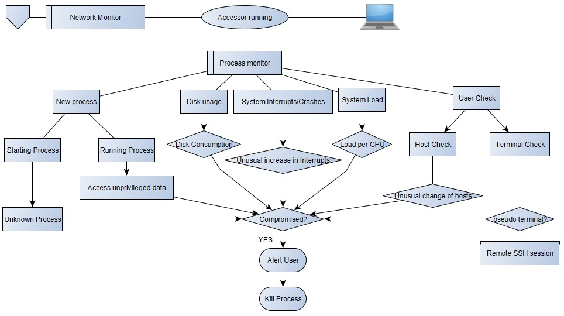
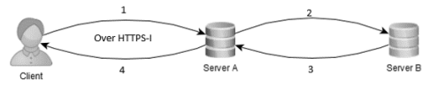
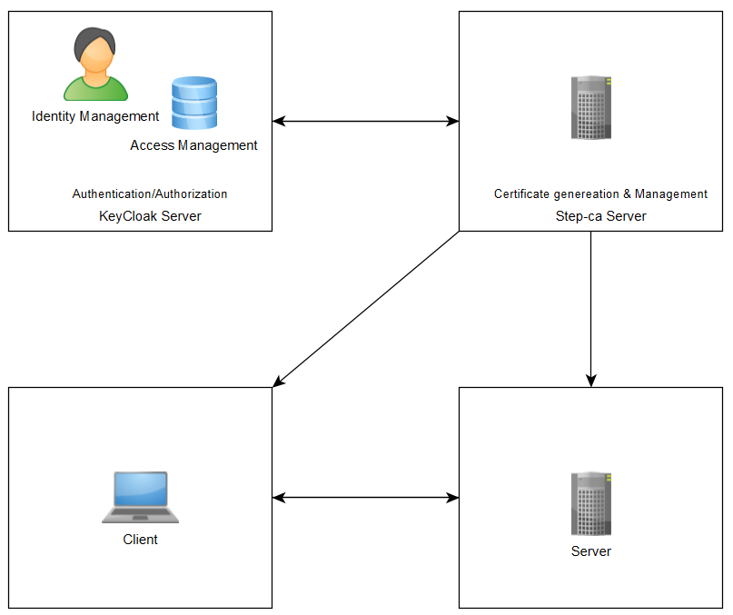

Securing Private Infrastructure with step-ca server
add_circle
Others...
add_circle
×Trunk Routing Protocol[2022]We might use Onion Protocol to hide ourselves among several other nodes but the TOR browser itself is installed on our OS and our OS’ collect data regularly about the user, in order to improve the experience or other reasons, while these programs access the internet directly without using any anonymizing protocol or network. Therefore, when these program leaks information they also leak several other information. While the Onion Protocol works on the basis of each node un-wrapping the data till it reaches the final destination, a port listener on the destination can result into adversary fetching the information.

To work around the same, the project works on developing “The Trunk Protocol”, instead of un-wrapping encryption layer on each node it would work to increase the protection by adding another layer using the public key of the receiver, where finally the receiver node decrypts each layer to achieve the requested data without any threats.
×CryWolf[2022]The structure developed is based on a usual website crawler that in general would just be fetching all the hyperlinks and reference to and from that website, on the top of it, a dynamic accessor has been formed to test these links on separate basis for various possible ways of compromises, which can be further appended based on the needs and wants of the user. And taking the suggestion from the Cranor’s work the usability ratio of the warning has been tried to improve for better user understanding and keep them away from such malicious weblinks as shown in the figure below.

The scanner executes to firstly validate the SSL certificate of these links prior to any further action. Once the SSL certificate is verified the tests are performed on each of the links and forms on the website, and without any further delay in case of a vulnerable area the alert is sent to the user with a virtually developed method of warning the user, on the side of which the code itself works to take the user to safer platform by both closing the current browser, raising a proper alert formed with keeping usability ratio in mind and allowing user to either learn more about the issue or close the same, while on the other hand if no issues are found user are allowed a proper safe surfing.
×System Accessor[2022]The Accessor is divided into two components each executing different sets of function in order to determine whether the system has been compromised or under one at the moment. Unlike the usual antiviruses offered from several companies checking for flags in the files or running the file for a short period in a sandbox, which can easily be bypassed by using redundant code, hiding the files, making the file polymorphic etc. Thus, to add to the current methods of accessing the system, the structure has been developed in two components namely Network Accessor and Process Monitor which works to check the system’s symptoms in order to provide better results.


A general compromised system symptoms could be any of the following and several other not mentioned here:
Unexpected fast consumption of disk.
System running at exceptionally slow speed
Unexpected connection by your computer to internet.
New unknown files running
Unusual traffic in & out of network
Suspicious activity in admin or privileged account
×HTTPS-I[2022]The currently used HTTPS communication protocols is called the secure version of HTTP using the SSL certificates, which on itself relies on Diffie-Hellman key exchange, making the bypassing of the same pretty easy as shown in implementation. Few of the top websites having a high request percentage on daily basis have started using HSTS where the website is forced to interact over HTTPS connections helping them from the downgrade attack, still these websites are vulnerable to spoof attack, with adversary personifying themselves as the legitimate website and stealing the sensitive information, the solution to which is discussed in upcoming part. The HTTPS-I protocol works to solve the issue, in addition to not allowing attacks like cookie theft, session hijack and MITM attacks. The structure of the protocol is quite simple yet costing for the sender and receiver on the processing side. It requires a bit more of computation when compared to HTTPS but offers a better front for safety of the user. It does the same by introducing the option of not just encrypting the content like the one being done in HTTPS but also hiding the content from the plain sight, with no proof of data being shared between the users, instead just a few random bytes which even if compromised has no way of telling what the byte represents nor what does the representation contains.

To describe the protocol in shorts steps we can conclude as follows-
Client generates the request:
The request gets hidden in an image
The image is converted to bytes
The bytes are encrypted using AES
The encrypted bytes are sent to Server A
The encrypted bytes are received and decrypted by Server A with a hash check
The decrypted bytes are converted into image
The image is decoded to fetch the request hidden in it
The requested data is collected from the host server A.
The response from the host server is encoded into image
The image is converted to bytes and encrypted using AES
The encrypted data is sent to client
The cipher is decrypted and the hash is matched
The decrypted bytes are converted to image to fetch the response data from the same.
×Securing Private Infrastructure with Smallstep step-ca server[2022]Currently, the status quo method for setting up secure ssh connections is by importing your public key to the server or downloading a private key of the server for initial access. However, even though communication is secure in this method, the management of users is complicated especially when you have multiple users. For example, one needs to make sure that if someone leaves your company, their access is revoked.
Hence, we need a better alternative to solve this access management problem.

This project works to securely configure the resources accessible through ssh service like GPU servers, remote hosts, etc. in an organization for shared access using step-ca tool. We can leverage existing OIDC service of the organization which is common these days like KeyCloak and integrate it with step-ca for swapping OIDC authorization tokens with short lived certificates for access to resources. These certificates can then be presented to the resource hosts for access to critical infrastructure without having to worry about the access management compared to the status quo of using passwords, public keys, etc.
Along the way, we will also learn about how we can use step-ca to generate certificate for our websites as well by generating a certificate for our keycloak server.